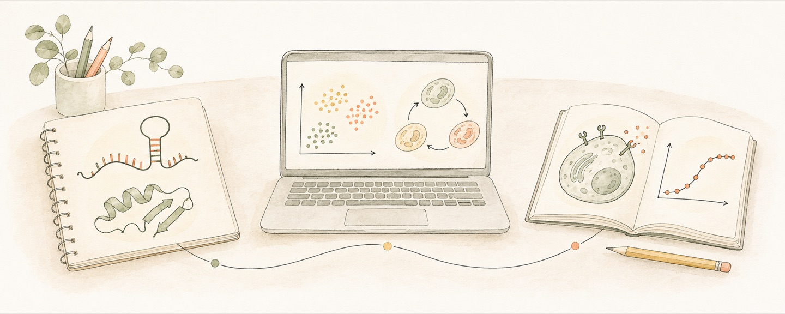

About
I work on synthetic biology and computational design.
Education
Tsinghua University
Doctoral research in Control Science and Engineering
Tsinghua University
B.S. in Chemical Biology

I work on synthetic biology and computational design.
Doctoral research in Control Science and Engineering
B.S. in Chemical Biology
